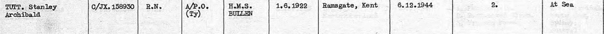
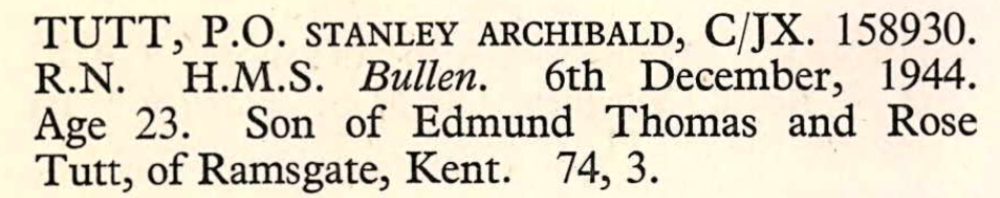
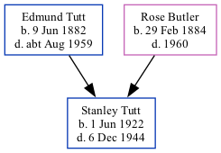

Stanley Archibald Tutt 1922 - 1944
[ Home ] | [ Calendar ] | [ Surnames Index ] | [ Family History ]The 6th of 7 children of Edmund Tutt (a bricklayer's laborer) and Rose Butler (a laundress), Stanley Tutt, the second cousin once-removed on the father's side of Nigel Horne, was born in Ramsgate, Kent, England on Jun 1, 19221,2. In 1944 he was serving in the military (regiment: Royal Navy; Rank: Petty Officer; Service number: C/JX 158930).
He died on Dec 6, 1944 in At Sea1,3,4,5 (HMS Bullen hit by U-Boat).
Parents
- Edmund Thomas was born on Jun 9, 1882
- Rose was born on Feb 29, 1884
Citations
- British Armed Forces And Overseas Deaths And Burials - Findmypast
- England & Wales births 1837-2006 - Findmypast
- Commonwealth War Graves Commission Debt Of Honour - Findmypast
- Find A Grave http://www.findagrave.com
- uboat.net
Media
UK, British Army and Navy Birth, Marriage and Death Records, 1730-1960

UK, Commonwealth War Graves, 1914-1921 and 1939-1947

England & Wales births 1837-2006 - BMD/B/1922/3/AZ/001426/097
Commonwealth War Graves Commission Debt Of Honour - GBM/CWGC/ROLLOFHONOUR/001680155
British Armed Forces And Overseas Deaths And Burials - BMD-OVS-DMR3-001867-133
British Armed Forces And Overseas Deaths And Burials - GBOR-MISCBMDS-DEA-000653459-1
British Armed Forces And Overseas Deaths And Burials - BMD-OVS-NAVR-000426-024
Family Tree
Generated by Ged2Site. Last updated on Jul 20, 2025